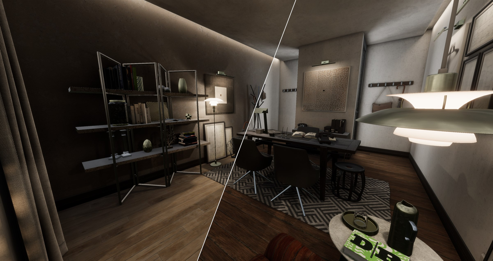
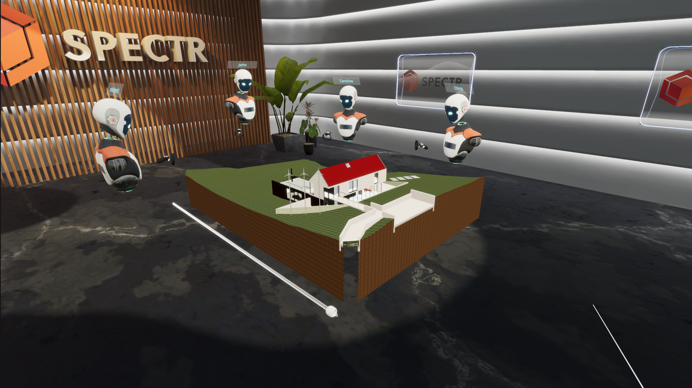
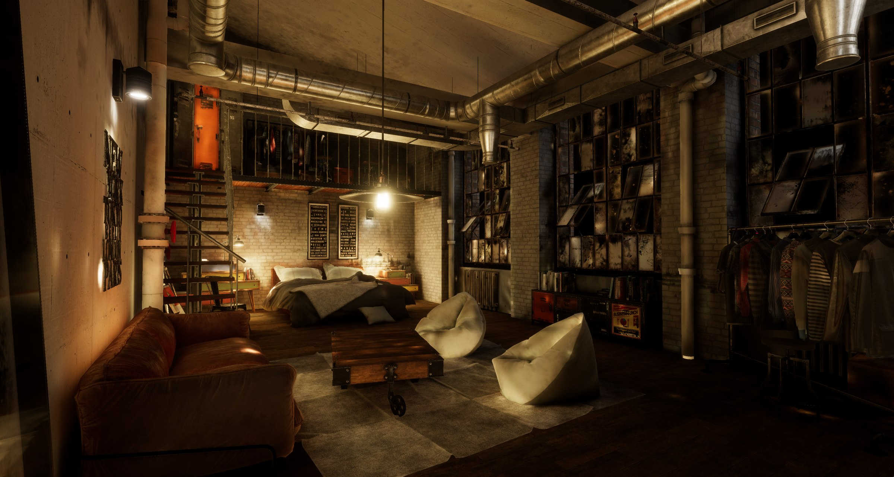

Spectr
What started as an architectural BIM viewer in VR has grown into the modular framework behind nearly everything VR Base ships — industrial simulations for major clients, in-house games, and the BIM collaboration tool that kicked the whole thing off.
Where it started
Spectr began as Spectr BIM — a way for architectural clients to upload their BIM models to our platform and step inside them in VR or through a web stream. The experience is multiplayer: you and your collaborators walk through the model together, change materials, hide or highlight structural elements like walls and pipes, take measurements, and record sessions for later review.
Where it is today
That BIM-viewer core grew into something much broader. Today, Spectr is the framework behind a wide catalogue of work — industrial simulations and interactive collaboration tools for clients including Kellanova, Mars, DEME, Lantis, and SPIE. Every client project shares the same Spectr foundation but layers custom code on top, so we ship bespoke experiences without rebuilding the common systems each time. The same framework also powers in-house VR Base games like Temple of Puchino and Nautilus.
My contribution
In 2020 we laid the foundation for what Spectr is today. We started with a team of three and have continued developing it as the studio has grown past nine developers. I laid the groundwork for the modular architecture, implemented the multiplayer framework, built tools that automate repetitive setup, and helped design the feature-selection system that lets each project opt into exactly what it needs — locomotion, interaction, hardware integrations, BIM tooling — without dragging the rest along. That modularity is what makes the per-client custom-code approach viable at the scale we now run it.


